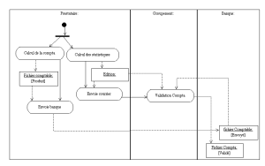
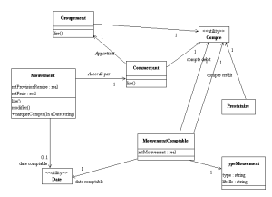

Rédaction des documents d’analyse avec U.M.L
Date de publication : 12/04/2006
7. Traitement batch
7.1. préambule
7.2. Réunion : Traitement bancaires
7.3. Cas d’utilisation : Fin de mois
7.4. Cas d’utilisation : comptabilité
7.5. Comptabilité de fin de mois : Traitement des provisions de remise
7.5.1. Objectif
7.5.2. Quand
7.5.3. Paramètre de lancement
7.5.4. Algorithme
7.5.5. Reprise en cas d’erreur
7.5.6. Diagramme de classe
7.6. Epilogue
7. Traitement batch
7.1. préambule
Le scénario concerne la comptabilité fin de mois. Une réunion avec la banque est nécessaire.
7.2. Réunion : Traitement bancaires
Le format d’échange est précisé avec la banque ( le fichier d’échange doit respecter la normalisation bancaire).
La banque indique, qu’une fois reçus, les virements et prélèvements ne peuvent être injectés dans le circuit bancaire qu’avec l’accord du groupement. Cette procédure reste manuelle par envoie d’un fax au responsable du compte de la banque. Le fax doit mentionner la mention « Accord de débit/crédit pour un montant de xxxx,xxx en date du xx/xx/xx ».
Du point de vue du groupement, cette validation demande une statistique ...
7.3. Cas d’utilisation : Fin de mois
Ce cas d’utilisation ne contient pas de difficultés particulières.
| Acteur |
Rôle |
| Fin de mois |
Acteur fictif figurant la fin de mois. La fin de mois déclenche le déroulement du cas d’utilisation. |
| Scénarios |
Description |
| Comptabilité |
... |
| ... |
|
La réunion sur les traitements fin de mois permet d’y voir plus clair. Elle introduit notamment un workflow sur les virements-prélèvements.
Diagramme d’activité : Validation de la comptabilité
Vous prenez soin de décrire chacunes des tâches...
7.4. Cas d’utilisation : comptabilité
Pour quelques instants les notations UML sont bandonnées pour revenir aux comptes en T de nos comptables !
Le schéma comptable est le suivant :
Les scénarios à envisager sont donc :
| Scénario |
Description |
| Provision de remise |
Du débit du commerçant au crédit du groupement |
| Frais |
Du débit du groupement au crédit du prestataire |
| Remise |
Du débit du groupement au crédit du commerçant |
| Cotisation |
Du débit du commerçant au crédit du groupement |
7.5. Comptabilité de fin de mois : Traitement des provisions de remise
Le traitement « provision de remise » et « frais » est effectué en un seul passage.
7.5.1. Objectif
Effectuer les mouvements comptables de fin de mois sur les remises accordées.
7.5.2. Quand
Lancement automatique, dans la nuit du 1ier au 2ième jour ouvré du mois.
7.5.3. Paramètre de lancement
- Année/Mois à prendre en compt
7.5.4. Algorithme
Calculer la date de fin de mois
Récupérer le compte du groupement
Récupérer le compte du prestataire
Parcours de tous les mouvements du mois triés par commerçant
Pour chaque commerçant
Lire le commerçant (Pour récupérer son numéro de compte)
Initialiser le cumul des provisions de remises
Pour chaque mouvement
Cumuler le montant des provisions de remise
Cumuler le montant des frais
Marquer le mouvement comme comptabilisé (Année/Mois de
comptabilisation)
Fin Pour
Ecrire un mouvement comptable du débit du commerçant au
crédit du groupement du cumul du montant des provisions
Fin pour
Ecrire un mouvement comptable du débit du compte du groupement
vers le crédit du compte du prestataire pour le cumul des
frais.
Fin pour |
7.5.5. Reprise en cas d’erreur
- Remettre la marque de comptabilisation du mois à blanc (Ce que vous pouvez faire de manière systèmatiqe. Ceci permet une reprise automatique ...).
- Relancer le traitement.
7.5.6. Diagramme de classe
Diagramme de classe : Comptabilité
7.6. Epilogue
Le même exercice est à faire pour les mouvements de remboursement et les cotisations.
Le transfert des fichiers mouvements vers la banque est à décrire. Cette description doit notamment décrire les moyens technique de mise en œuvre du transfert (Protocole, adresse serveur, ...) par un diagramme de déploiement.
Le deuxième scénario du cas d’utilisation "Fin de mois", c’est à dire les statistiques est décrit dans le chapitre suivant.
Ce document est soumis à la licence GNU FDL traduit en français ici.
Permission vous est donnée de distribuer, modifier des copies de cette page tant que cette note apparaît clairement.
|


{kind=link}
{kind=link}
{kind=link}